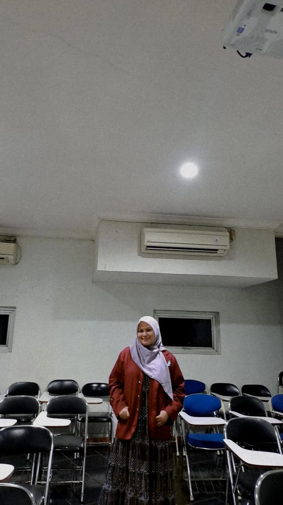

pribadi yang penuh dengan keunikan dan kekuatan yang tak terlihat. Setiap wanita memiliki cerita hidupnya sendiri yang penuh dengan perjuangan, harapan, dan impian. Sebagai individu, wanita mampu menunjukkan kelembutan, namun juga kekuatan luar biasa dalam menghadapi berbagai tantangan. Kepekaan hati dan intuisi yang tajam sering kali menjadikan mereka sebagai pendengar yang baik, sahabat yang setia, dan ibu yang penuh kasih. Wanita juga memiliki semangat untuk terus belajar, berkembang, dan mewujudkan impian mereka. Di tengah perjalanan hidup yang kadang penuh dengan cobaan, mereka tetap berdiri teguh dan berani menghadapi dunia. Sebagai wanita, saya percaya bahwa keindahan sejati tidak hanya terletak pada penampilan luar, tetapi juga pada ketulusan hati dan keberanian untuk menjadi diri sendiri. Saya selalu berusaha untuk tumbuh menjadi pribadi yang lebih baik, memberi dampak positif pada orang-orang di sekitar saya, dan terus menjalani hidup dengan penuh rasa syukur dan semangat.
Tentang SayaSaya seorang mahasiswa di Universitas insan Pembangunan indonesia, jurusan manajemen. Saat ini saya sedang berada di Semester 4, Dan terus belajar untuk menjadi pribadi yang produktif dan lebih berkembang di bidang bidang lainnya. Selain kuliah juga saya sering membantu seorang ibu untuk melakukan pekerjaan rumah. pengalaman berharga bagi saya untuk selalu berbakti kepada kedua orang tua , dikarenanakan orang tua mendidik saya menjadi lebih baik, dan selalu mensupport kegiatan yang positif.
Saya sangat tertarik dengan membaca buku-buku tentang sejarah ,teknologi ,dan religi.
Menuliskan sebuah diary yang sangat penting bagi diri pribadi saya.
Selalu mencari resep-resep makanan di internet, dan selalu saya praktekan di rumah.